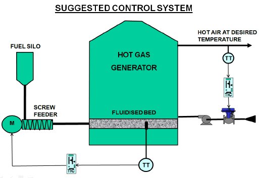

Control
Loop Case History 107
The horrible flywheel effect
I have been working in a smelting plant
where they have severe control problems. To make testing more
difficult and onerous, nearly all their processes have
excessively slow dynamics, with many of the loops being
extremely slow temperature controls.
As in the case of many
mining plants, it would appear that the controls and control
systems were designed and implemented by people who do not
really have a great deal of understanding of the practicalities
of control. I believe that many plants are designed with only
the processes in mind, and with little or no thought initially
as to how to control them. Once all the designs are done, then
the controls are put in; sometimes literally as an afterthought.
I know that some large
mining groups have separate project groups who design new
plants. It would also appear that often these groups may not
have all that much knowledge of the actual practical
implementation and operation of plant controls. Discussing this
at a recent conference with a group of senior metallurgists and
control engineers from various mining plants, I was told that
they find many design errors and faults in new plants, which
they make note of, and then feedback that information to the
project design group. However when the next plant is built, they
find exactly the same problems have been repeated. When they
complain, they are always fobbed off with some remark like “it’s
a question of economics”, or “in our experience it works
fine.” All very frustrating for these good people.
When it comes to the
controls and control strategies it is obvious that in many cases
very little thought and knowledge has been employed. Often poor,
or even unsuitable control equipment is used, probably due to
ignorance, or based solely on cost rather than on the control
requirements.
Controls in many mining
plants also often seem to have been designed by metallurgists.
Many metallurgists I have met who do not come from a chemical
engineering background, usually have not undergone control
courses, and have picked up their control knowledge in the
field. Although many of these people no doubt are very competent
and do a great job, I have on occasion come across some rather
weird and wonderful control strategies that they have concocted.
Some of these would have even made Heath Robinson quite envious.
One fairly common example which I have come across several times
in plants is finding two control valves in series in the same
line in close proximity to each other, the one being for
controlling pressure, and the other for controlling the flow.
This is very interactive and doesn’t work at all well, usually
resulting in on of the loops being left permanently in manual.
An example of a strange
control strategy in this particular plant, was a control for a
very important air temperature, which is critical for
satisfactory operation of a drier further downstream. Instead of
putting a direct feedback control onto one of the important
control loops on this temperature, the designer had come up with
some extremely complicated and highly involved control system
which involved using a PI controller as a sort of ramp generator
that continuously tried to get its output up to maximum, but
actually attempted to achieve the control by writing a
complicated formula from a calculation block that adjusted the
high output limit of the controller up and down in an attempt to
keep the critical temperature operating between two limits.
Unfortunately when it reached the high limit another control
came in which rapidly closed down the damper, and caused a huge
bump in temperature. This is disastrous for the drier control as
this air temperature needs to be kept as constant as possible.
The probable reason for this design will be discussed a little
later.
The interesting thing
about it is that the people in the plant who have been using
this system for years have got used to working with it, and didn’t
want it changed, even with the bad control. There were remarks
like: “We want you to make it work better, but don’t change
the way it works”, and “Can’t you tune it better?”, or
“Possibly the damper has problems”. People are very
resistant to change, even if you can make it much better by
implementing a much simpler and better control strategy.
Then there were also
things in the plant, like using multiple controllers to control
a single variable, where one would have done the job much
better.
Another problem we
unearthed was with a pressure control where three fans are used
in parallel each with its own up-stream damper to suck gases out
of a furnace. The idea was that depending on load, one, two, or
three fans could run. The problem was that the dampers were
relatively crude flaps sitting in a duct of about 1.5 meter
diameter. When closed they did not shut off tightly, to say the
least. This results in the fact that if a fan is off-line with
its damper shut, then part of the gases being pushed through by
the working fans are bypassed, and recirculated through the
non-working fan instead of all going on up the stack. It was
interesting to see that the fan that was off-line was actually
being spun backwards. Thus a tremendous amount of energy and
effort is being wasted. It was not surprising that it was
extremely difficult trying to get the pressure up to setpoint.
Returning to the air
temperature control; I was informed by a senior metallurgist
that it exhibited “a severe flywheel effect”. He explained
that if a change was made it took a long time to for it to take
effect, and if the change was too large and eventually resulted
in the process variable overshooting the setpoint, it would take
a long time before corrective action would take effect. This is
very much the sort of behaviour you see when changing speed of a
flywheel with a large mass, which exhibits a high degree of
inertia.
“A severe flywheel
effect” is a fairly good way of describing processes with very
slow dynamics. Essentially one tunes a controller to try and
match the dynamics of a process as closely as possible. (My Part
2 Loop Signature series on control of more difficult processes,
which were published in this magazine over the past couple of
years, give detailed information on this subject for every type
of dynamic that one might encounter in industrial process
control.) The important thing here is that it means that
processes with slow dynamics can only be controlled with a slow
tuning, whereas fast processes can have fast control. This makes
the control of slow processes more difficult from several
aspects, including making the tuning more difficult because of
the time it takes, and also from the importance of the need of
the final control element (e.g. the valve) to do its job exactly
as dictated by the controller. For example if you have a valve
that has non-linear installed characteristics, or exhibits
problems like hysteresis, then the controller has to do extra
work to also correct for the valve problems, which may take a
very long time, and result in rotten control.
In essence the purpose of the system on
this smelter was to control the temperature of a flow of air
which is being blown into the drier. The air is heated by
passing it through a “hot gas generator” which utilises a
fluidised bed. There are quite a few controls loops involved on
this unit, but the two most important are:
a. Temperature
of the fluidised bed of the generator, which is controlled
by varying the amount of fuel being fed into the generator.
b. Outlet
temperature of the hot air being heated as it passes though
the generator. This is controlled by varying the flow of air
coming into the generator through a damper on the input.
Figure 1 shows a sketch of the system, but
with a more conventional control strategy than was actually
employed in the plant.

Fig 1
As can be expected these two controls are
highly interactive. If the output of either controller moved it
had a severe effect on both of the PV’s (process variables).
Both of the temperature processes are very
complex and interesting from the dynamic point of view. The bed
temperature is an extremely slow integrating process with a
large lag on it. Integrating processes are those that can only
stay constant if one balances the input and output, which in
this case is heat energy. If the input is larger than the output
then the temperature will keep rising in a constant ramp, and
will “run away”, and vice versa. (This is very similar to
control of tank levels, except levels are much faster).
Integrating processes are hard to control in manual because of
this and require constant supervision. They really must operate
in automatic. To illustrate the difficulty of manual control, we
observed an operator trying for over 3 hours to stabilize this
loop in manual without success. The slowness of this process
coupled with the lag make it extremely difficult to control, and
feedback control will perforce have to operate very slowly for
stability. This is the loop that behaves with the “flywheel
effect”.
The outlet temperature
loop on the other hand is basically self-regulating (like a flow
control) and is very fast relative to the bed temperature. A
test was performed on it that proved it was extremely easy to
control well using a conventional PI feedback controller. The
existing control strategy on this process which was mentioned
earlier using the “ramp generator” is very odd, and no one
we spoke to could really explain properly how it works and why
it was designed like that. The most probable reason that it was
instituted is because there is a huge problem associated with
this control as it interacts so badly with the bed temperature.
If a normal control, operating with a medium fast response, was
to be instituted on the outlet temperature, huge swings on the
bed temperature result. There is a very tight high limit trip on
the bed temperature, which makes the situation even more
difficult. Therefore it becomes necessary that the outlet
temperature control must operate extremely slowly. I believe the
original strange control system was an attempt to slow the air
temperature control down to prevent it causing bumps on the bed
temperature with its “horrible flywheel effect”.
The recommendation was
made to the plant that they should replace the existing outlet
temperature control system with a conventional control loop as
shown in Figure 1. This would, as mentioned above, need to be
drastically detuned to minimise bumps on the bed temperature.
Another thing that would
help a great deal would be to employ dynamic decoupling
(feedforward in both directions) between the two loops. This has
also been detailed in the Part 2 Loop Signature series.
These suggestions have been put forward to
the plant people, but to date no decision on whether to try and
implement the changes or not have been made. It would be very
interesting if they agree to go ahead with the modifications,
but as stated earlier they may prefer to live with the existing
system which they are familiar with, even though it doesn’t
work well. People get used to living with problems, and hate
changes.
Index to articles
Michael
Brown is a specialist in control loop optimisation, with many years of
experience in process control instrumentation. His main activities are
consulting, and teaching practical control loop analysis and
optimisation. He gives training courses which can be held in clients'
plants, where students can have the added benefit of practising on live
loops. His work takes him to plants all over South Africa, and also to
other countries. He can be contacted at:
Tel (011) 486-0567
Fax (011) 646-2385
E-Mail: michael.brown@mweb.co.za
|